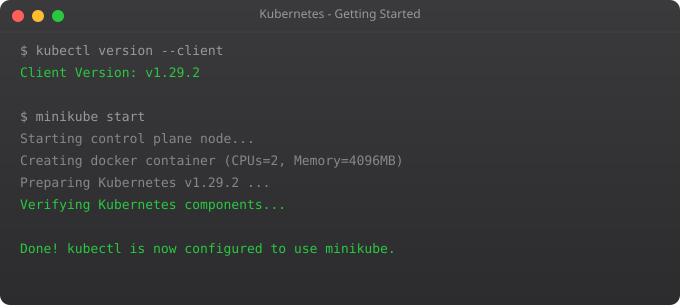

Kubernetes is one of those technologies that sounds intimidating until you actually understand what problem it solves. And the problem is surprisingly simple: when you have more than a few containers running in production, managing them by hand becomes impossible. You need something that handles scheduling, scaling, networking, and recovery automatically. That something is Kubernetes.
I remember the first time I tried to manage a multi-container application manually. I had a web server, a database, a cache, and a background worker — all running in Docker containers. It worked fine on my laptop. But deploying it to production meant I had to figure out which containers go on which servers, how they talk to each other, what happens when one crashes, and how to update without downtime. That is when Kubernetes started making sense to me.
Before container orchestration, deploying applications at scale was painful. If you had ten servers running your application and one went down, someone had to notice, log in, and fix it manually. If traffic spiked, someone had to manually spin up more instances. Companies built custom scripts and internal tools to handle all of this, but every team was solving the same problem differently.
Docker made packaging applications consistent, but it did not solve the orchestration problem. Running docker run on one server is easy. Running and coordinating hundreds of containers across dozens of servers is a completely different challenge.
Kubernetes is a container orchestration platform. In practical terms, it decides which server should run each container based on available resources. It automatically restarts containers that crash. It scales your application up or down based on demand. It manages networking so containers can find and talk to each other. It handles rolling updates so you can deploy new versions without downtime. And it stores configuration and secrets securely.
You describe what you want — three copies of my web server, connected to one database, with this much CPU and memory — and Kubernetes figures out how to make it happen. If something breaks, Kubernetes automatically fixes it to match what you described. This declarative approach is what makes Kubernetes powerful.
A cluster is a set of machines that Kubernetes manages. A pod is the smallest unit — one or more containers that run together. A deployment tells Kubernetes how many copies of a pod to run. A service provides a stable network address for a set of pods. And kubectl is the command-line tool you use to interact with Kubernetes.
Do not try to memorize all of this right now. These concepts will become concrete as we work through the series. In Part 2, we will set up a local Kubernetes environment and deploy your first application.